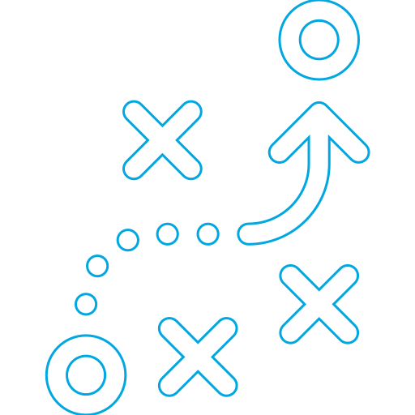
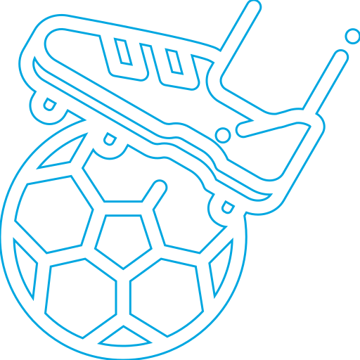

Usamos Machine Learning y Visual Recognition para entender el sentimiento argentin@
Encontranos en la TIC Experience 2018
27 - 28 de junio de 13.00 a 17.00 horas @ Escuela ORT Argentina (Sede Belgrano)

Modo Entrenamiento
Mostrándole al sistema de Visual Recognition de IBM Watson™ vamos a enseñarle cómo siente un argentin@ los triunfos y las derrotas de su selección.

Modo Partido
Antes de cada partido, mediremos el humor de la hinchada utilizando el entrenamiento previo de Machine Learning, ¿Servirá para preveer los resultados?